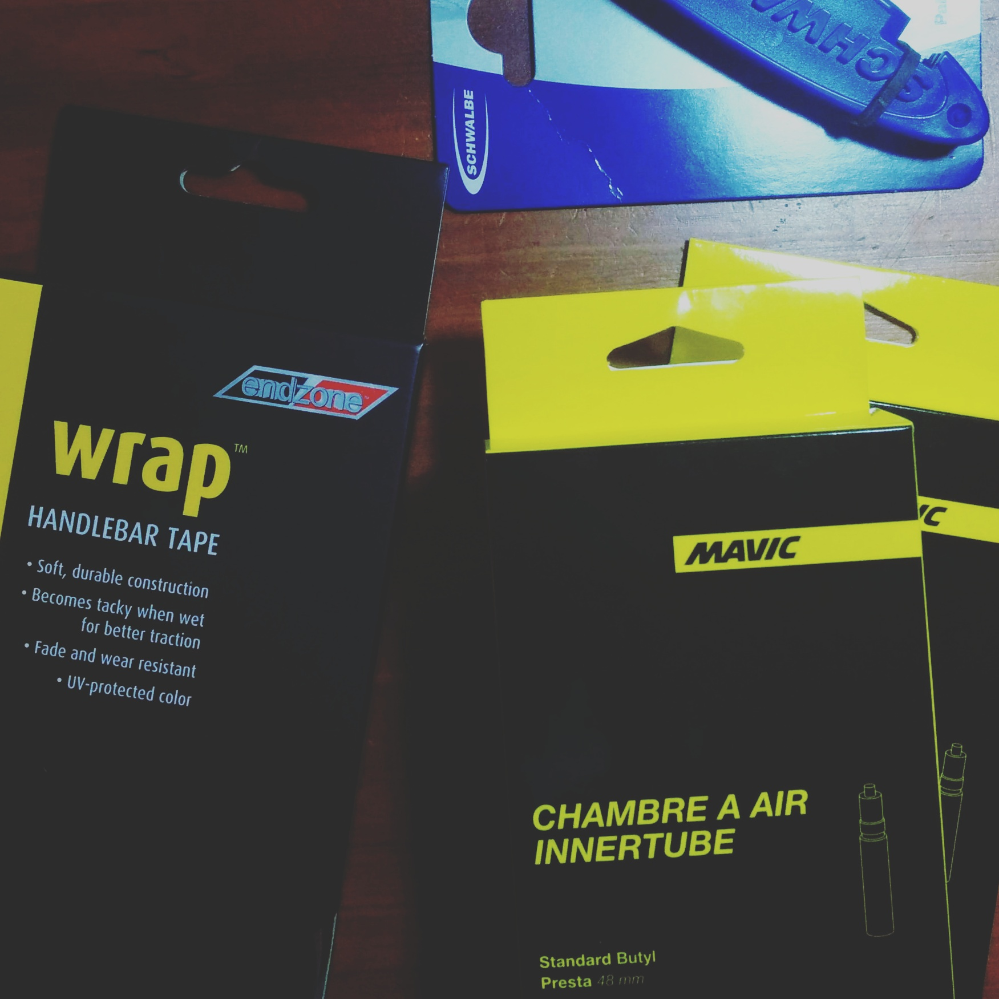

久しぶり

最近は、ロードバイク一筋。写真はバーテープとMavicのチューブ。
次のプラン。手頃な完成車を買うか、ちょっと奮発していいフレームセットを買うか。。
仮にフレームセットを買ったとしたら、コンポはSRAMのForceにしたい。
Shimano 105とかUltegraでもいいけど、SRAMのDouble Tap Shiftingも一回味わってみたい。
一台フロントシングルのバイクも持っときたい。FDが無くなってメンテナンスがラクになるし、
なによりシンプルでカッコいい笑。その場合、チェーンリングの歯数が問題。CX用のチェーンリングだと平地巡航しにくいかも。
チェーンリングはこんなカンジのやつ。